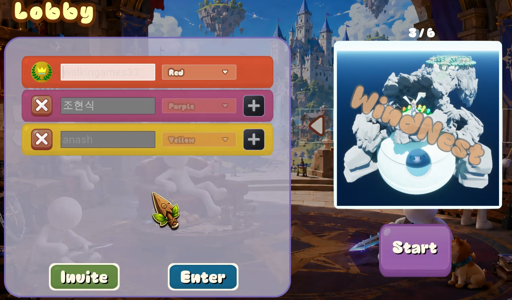

해결하려던 문제
세션 생성·검색·참가는 비동기로 완료됩니다. 사용자가 연결을 취소하거나 다른 요청을 시작한 뒤 이전 콜백이 도착할 수 있어, 요청의 수명과 실제 세션 상태를 함께 관리해야 합니다.
세션 요청의 수명
- Request요청 종류와 Request ID 발급
- Online Subsystem생성·검색·참가 처리
- Callback현재 요청과 완료 결과 확인
- Lobby / Cleanup로비 진입 또는 취소 세션 정리
진행 중인 요청을 식별
BeginCreateRoomSession, BeginFindRoomSessions, BeginJoinRoomSession이 요청 ID를 반환합니다. 완료 콜백에도 ID를 전달하고 현재 요청인지 확인하여 늦게 도착한 결과가 다른 요청의 상태를 바꾸지 않도록 구분합니다.
취소와 시간 초과도 하나의 흐름으로
취소 상태를 생성·검색·참가 단계별로 구분하고, 취소 이후 완료된 생성·참가에 대한 세션 정리 경로를 둡니다. 각 작업에는 타임아웃을 두며, Network Failure와 Travel Failure를 처리하는 진입점도 분리했습니다.
Steam에 출시한 플레이 가능한 결과물
Pandora Battle은 WIGWAG Studio 명의로 2026년 8월 27일 Steam에 출시했습니다. 스토어에서 온라인 PvP, Steam 업적과 Steam Cloud 지원을 확인할 수 있습니다. 게임 코드에서는 업적 정의와 AchievementSubsystem을 별도 구성 요소로 관리합니다.
설계의 결과
세션 성공 경로뿐 아니라 취소·실패·정리까지 다루고, 실제 Steam에서 접근할 수 있는 게임으로 연결했습니다.
관련 코드
각 구현의 책임과 처리 흐름을 소스 코드에서 확인할 수 있습니다.